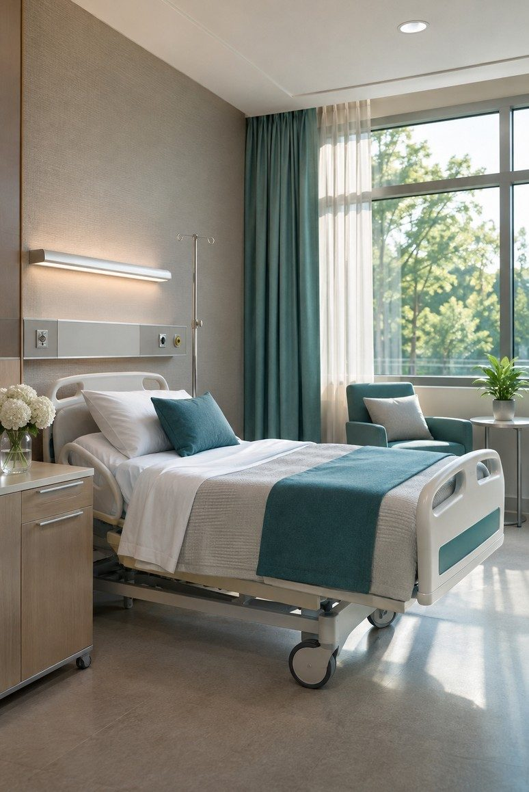
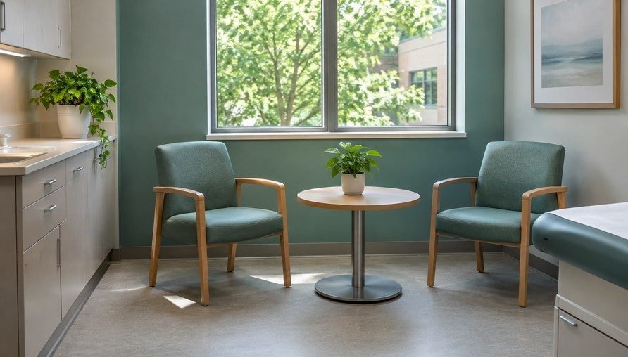
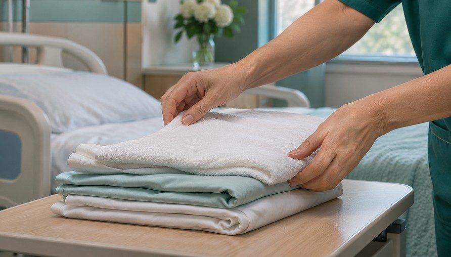
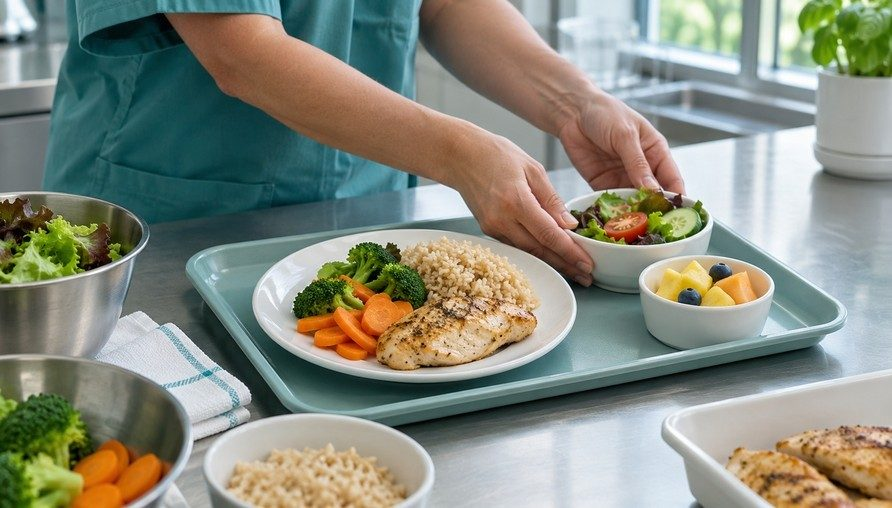

진료와 병원 이용
안내
병원소개
정우병원과 진료 이용에 관한 안내입니다.

진료와 병원 이용 안내
진료 일정과 방문 준비를 안내합니다.
검사 자료와 복용 약 목록을 확인합니다.
진료 계획은 담당 의료진과 상담합니다.
처음 방문할 때 예약 여부와 방문 시간을 전화로 확인해 주세요. 이전 검사 결과와 현재 복용 중인 약 목록이 있으면 날짜를 확인할 수 있게 준비해 주세요. 다른 의료기관에서 안내받은 진료 내용도 상담 때 전달해 주세요.
상담에서는 궁금한 점과 현재 치료 일정, 식사에서 달라진 내용을 말씀해 주세요. 검사나 진료 계획은 의료진이 기록과 현재 상태를 확인한 뒤 안내합니다. 급한 증상이 있거나 상태가 달라지면 의료기관에 문의해 주세요.
운영 시간, 예약 가능 여부, 준비 자료는 대표 전화로 확인할 수 있습니다. 이동 지원이 필요하거나 식사 관련 전달 사항이 있으면 예약할 때 알려 주세요.
정우병원 드림
인사말 안내 →병원 운영과 진료 관련 정보는 소개 쪽에서 확인해 주세요.
진료 담당자와 상담 일정은 병원으로 문의해 주세요.
운영과 진료 관련 안내를 확인하실 수 있습니다.
진료실과 병원 내 공간의 이용 방법을 안내합니다.
위치와 교통편, 주차 관련 문의는 대표 전화로 확인해 주세요.
암면역증진치료
진료 상담에서 확인하는 치료 안내입니다.
상담과 검사 일정을 확인해 주세요
비타민 관련 진료를 문의할 때는 현재 받고 있는 치료와 복용 중인 약, 보충제, 최근 검사 일정을 의료진에게 알려 주세요. 과거에 같은 성분을 사용한 적이 있거나 불편했던 점이 있다면 상담에서 말씀해 주세요. 관련 자료가 있으면 검사 결과지나 처방 내역을 함께 가져와 주세요. 자료가 없더라도 현재 기억하는 범위에서 설명하시면 됩니다. 확인이 필요한 기록은 담당자가 별도로 안내합니다.
첫 상담 전에 준비할 내용
예약 날짜와 방문 인원, 병원에 도착할 예정 시간을 확인해 주세요. 다른 의료기관에서 받은 진료 의뢰서나 검사 결과가 있다면 날짜가 보이도록 준비해 주세요. 복용 약은 제품명과 복용 횟수를 알 수 있는 처방전이나 약 봉투가 참고할 수 있습니다. 약 목록을 준비하기 어렵다면 평소 복용 시간과 최근 변경 사항을 적어 오셔도 됩니다. 개인 정보가 포함된 자료는 접수 또는 진료 담당자에게 직접 전달해 주세요.

방문 당일 접수와 상담
도착하면 예약 여부를 말씀해 주시고, 처음 방문하는 경우 접수에 필요한 항목을 확인해 주세요. 작성이 필요한 문서가 있으면 내용을 읽고 모르는 항목은 직원에게 질문해 주세요. 상담 차례가 오면 가장 먼저 확인하고 싶은 내용을 말씀하시면 됩니다. 증상이 시작된 시점, 달라진 생활 내용, 현재 치료 일정은 기억나는 순서로 설명해 주세요. 날짜나 수치가 정확하지 않으면 추측해 적지 말고 확인 가능한 자료를 가져와 주세요.
검사 계획과 결과 확인
검사 종류와 준비 방법은 진료 내용에 따라 달라질 수 있습니다. 금식이나 복용 조정이 필요한지 임의로 판단하지 말고 예약 시 받은 안내를 확인해 주세요. 안내를 받지 못했거나 기존 치료 일정과 겹치는 경우 방문 전에 병원으로 문의해 주세요. 검사 결과를 확인하는 날짜와 상담 방법도 담당 직원에게 확인할 수 있습니다. 결과지를 받으면 측정 일자와 항목 이름을 함께 살펴보고, 이해되지 않는 표현은 진료 중 질문해 주세요.

치료 일정 문의
치료 여부와 순서는 담당 의료진이 진료 기록을 확인한 뒤 설명합니다. 다른 병원 진료, 검사, 복용 약 일정이 있으면 상담 때 알려 주세요. 일정 변경이 필요한 경우 가능한 날짜와 시간대를 전화로 전달해 주세요. 당일 방문이 늦어지거나 취소해야 할 때에도 병원에 먼저 연락해 다음 절차를 확인해 주세요. 안내받은 일정과 장소는 메모해 두고 방문 전에 한 번 더 확인하면 접수에 참고할 수 있습니다.
치료 전 전달할 사항
최근 시작한 약이나 중단한 약, 알레르기, 이전 치료 중 불편했던 점을 의료진에게 말씀해 주세요. 임신 가능성, 삽입형 의료기기, 수술이나 시술을 받은 시점 등 진료에 참고할 정보가 있다면 빠뜨리지 말고 알려 주세요. 어느 항목이 관련 있는지 알기 어려운 경우에도 숨기지 말고 질문해 주세요. 의료진은 상담 내용과 진료 자료를 확인해 필요한 정보를 안내합니다.

방문 후 확인할 내용
진료가 끝난 뒤 다음 방문 날짜, 추가로 준비할 자료, 검사 결과를 확인할 방법을 접수에서 확인해 주세요. 설명을 들은 뒤 기억나지 않는 항목이 있으면 같은 자리에서 질문해 주세요. 서면 안내를 받았다면 연락 방법과 운영 시간을 살펴보세요. 귀가 후 새로 확인할 질문은 항목별로 적어 두었다가 다음 상담 때 전달하면 됩니다. 안내받은 내용과 다른 증상이 나타나거나 문의가 필요한 경우 병원에 전화해 담당 부서 연결을 요청해 주세요.
비용과 비급여 항목 문의
비용은 진료 항목과 검사 내용에 따라 다를 수 있으므로 예약 전에 대표 전화로 확인해 주세요. 문의할 때에는 궁금한 진료나 검사의 이름, 방문 희망 시점을 알려 주시면 담당자가 확인할 범위를 안내합니다. 비급여 항목의 명칭과 비용은 병원 소식의 관련 안내에서도 살펴볼 수 있습니다. 안내받은 비용에 포함되는 항목, 별도로 확인할 항목, 결제 방법을 함께 물어보세요. 개인별 진료 계획에 따라 달라지는 내용은 상담 후 확인이 필요합니다.
기존 진료와 함께 확인하기
다른 의료기관에서 치료 중이라면 담당 의료진과 진료 일정 및 검사 내용을 공유해 주세요. 진료 기록이나 처방 변경 내용이 있을 때에는 자료를 준비해 전달해 주세요. 여러 곳의 안내가 다르게 느껴지면 내용을 비교해 임의로 선택하지 말고 각 담당 의료진에게 확인하는 방법을 문의해 주세요. 복용 중인 약의 용량이나 시간을 스스로 바꾸지 말고 변경이 필요한 경우 처방한 의료진과 상의해 주세요.
문의 방법과 운영 시간
진료 일정, 준비물, 검사 전 안내, 비용 문의는 대표 전화로 확인할 수 있습니다. 전화할 때 방문 예정일과 문의할 항목을 말씀해 주세요. 통화가 어려우면 운영 시간에 다시 연락해 주세요. 온라인 접수는 준비 중입니다. 문의는 010-4894-4905로 전화 주세요. 급격한 상태 변화나 응급 증상이 있는 경우에는 일반 예약 문의를 기다리지 말고 가까운 응급의료기관 또는 119에 연락해 주세요.
예약 시간과 일정 변경
예약한 날짜에 방문하기 어렵다면 가능한 한 미리 연락해 변경할 수 있는 시간을 문의해 주세요. 예약 확인 문자나 메모가 있으면 통화할 때 날짜와 시간을 함께 알려 주시면 확인에 참고할 수 있습니다. 예약 시간이 늦어질 때에는 현재 위치와 예상 도착 시간을 접수에 전달해 주세요. 검사나 상담이 함께 잡혀 있는 경우 각 일정의 순서와 준비 사항도 다시 확인해 주세요. 방문 날짜를 바꾼 뒤에는 변경된 시간과 준비물을 기록해 두세요.
보호자 동행과 자료 전달
보호자와 함께 방문할 계획이라면 예약 과정에서 동행 여부를 알려 주세요. 진료 내용을 함께 확인해야 하는 경우에는 환자 본인의 의사를 먼저 확인해 주세요. 다른 기관에서 받은 자료가 여러 장이면 최근 자료와 이전 자료를 구분해 전달하면 날짜를 확인하기 쉽습니다. 원본 서류를 맡겨야 하는지, 사본으로 충분한지는 접수에 문의해 주세요. 가족이 대신 문의할 때에는 전달 가능한 정보의 범위와 필요한 확인 절차를 먼저 물어봐 주세요.
비용을 물어볼 때 확인할 항목
비용 문의 시에는 알고 싶은 검사나 진료 항목을 구체적으로 말씀해 주세요. 항목별 비용 외에 별도로 발생할 수 있는 비용이 있는지, 비용이 적용되는 기준과 결제 방법은 무엇인지 확인할 수 있습니다. 비급여 항목은 항목명과 적용 단위를 함께 물어보면 안내 내용을 비교하기 좋습니다. 전화로 안내받은 뒤 진료 계획이 달라지면 금액도 바뀔 수 있으므로, 최종 비용은 해당 진료와 검사 내용을 확인한 다음 다시 문의해 주세요.
기록을 보관하는 방법
진료에서 받은 안내문과 검사 결과는 날짜별로 보관해 주세요. 다음 방문 때 가져올 자료를 구분해 두면 접수 과정에서 확인하기 쉽습니다. 사진이나 파일로 보관하는 경우에는 이름과 생년월일 등 개인 정보가 다른 사람에게 노출되지 않도록 주의해 주세요. 온라인 접수 창구가 열리기 전에는 개인 진료 정보를 공개 게시판이나 공개 댓글에 남기지 마세요. 문의는 대표 전화로 해 주시고, 필요한 서류의 전달 방법은 담당 직원에게 확인해 주세요.
비타민 치료 안내 →상담 전 현재 진료와 검사 자료를 준비해 주세요. 적용 여부와 일정은 진료 상담에서 확인합니다.
삽입 의료기기와 치료 일정 관련 정보는 예약 때 병원에 알려 주세요.
복용 약과 현재 진료 내용을 상담에서 확인해 주세요.
치료 방법과 주의 사항은 담당 의료진에게 문의해 주세요.
악액질·식이요법
식사와 검사에 관한 안내입니다.
검사 전 확인할 자료와 식사 기록
식사량이나 체중에 변화가 있어 상담을 예약한 경우, 변화가 시작된 때와 최근 식사 모습을 간단히 기록해 주세요. 기억하는 범위에서 식사 횟수, 먹기 어려운 음식, 식사 중 불편한 점을 적으면 상담에 활용할 수 있습니다. 정확한 수치를 모르면 임의로 계산하지 않아도 됩니다. 최근 진료나 검사 자료가 있다면 날짜가 확인되도록 준비해 주세요.
상담 전에 정리할 내용
지난 몇 주 동안 달라진 식사 시간과 식사량, 삼킬 때 느끼는 불편, 피하거나 제한 중인 식품을 메모해 주세요. 복용 약이나 영양 보충 제품이 있다면 이름과 이용 시간을 함께 적어 주세요. 음식 알레르기 진단을 받은 적이 있으면 어떤 식품에 어떤 반응이 있었는지 알려 주세요. 직접 진단하지 말고 기존 진료 기록이나 검사 결과를 준비해 담당자와 확인해 주세요.
검사와 결과 상담
검사 종류와 진행 방법은 예약한 진료에서 안내받아 주세요. 검사 전 식사나 약 복용을 임의로 바꾸지 말고 별도의 준비가 필요한지 병원에 문의해 주세요. 결과를 들을 때에는 검사 일자, 항목 이름, 추가 상담이 필요한지 확인해 주세요. 특정 식품을 제한하거나 식단을 크게 바꾸기 전에 의료진 또는 영양 담당자와 상의해 주세요.
식사 계획 문의
식사 계획을 세울 때에는 하루 식사 시간, 이용 가능한 식재료, 조리와 보관 여건, 피해야 할 재료를 함께 확인해 주세요. 병원 식사 이용이 필요한 경우 제공 시간과 신청 방법, 알레르기나 식사 제한을 전달할 곳을 미리 문의해 주세요. 메뉴와 재료는 날짜에 따라 달라질 수 있으므로 방문 전 확인이 필요합니다.
식사 기록에는 시간, 먹은 음식, 양을 가능한 범위에서 적고, 식사 중 불편이나 식욕 변화가 있었는지도 덧붙여 주세요. 며칠간 기록하기 어렵다면 평소 식사 횟수와 자주 먹는 음식을 중심으로 알려 주세요. 제한하는 식품이 있으면 종류와 함께 제한을 시작한 시점과 이유도 함께 전달해 주세요. 식사 안내를 받은 뒤 이해되지 않는 항목이 있으면 다음 식단을 정하기 전에 문의해 주세요.
하루 식사 일정을 문의할 때에는 기상과 취침 시간, 병원 방문이나 다른 진료 일정, 식사를 준비할 수 있는 시간대를 설명해 주세요. 병원에서 식사를 이용할 예정이라면 신청 마감 시점, 변경 연락처, 식사 장소를 확인해 주세요. 식품 알레르기나 종교·개인 사유로 피하는 재료가 있으면 가능한 범위와 대체가 가능한지 담당자에게 물어봐 주세요. 안내 내용은 메뉴와 재료 수급 상황에 따라 달라질 수 있습니다.
식사 형태나 양에 대해 별도로 안내받은 내용이 있다면 누구에게 언제 들었는지 기록해 두세요. 안내가 현재 진료 계획과 맞는지 확인하고, 기억이 다른 경우에는 추측해 적용하지 말고 진료 담당자에게 다시 문의해 주세요. 병원식 신청을 취소하거나 바꾸는 방법도 접수에 확인할 수 있습니다.
악액질 검사 안내 →검사 준비와 식사 이용에 관한 세부 사항은 예약 전에 확인해 주세요.
010-4894-4905 ↗온라인 접수는 준비 중입니다. 문의는 010-4894-4905로 전화 주세요.상담 때 전달할 항목
| 확인 항목 | 준비하거나 기록할 내용 | 전달 시점 |
|---|---|---|
| 최근 변화 | 식사량, 식사 횟수, 체중 변화가 시작된 때 | 첫 상담 |
| 식사 불편 | 삼킴, 소화, 냄새, 식사 중 어려움 | 상담 전 |
| 제한 식품 | 피하는 재료와 제한을 시작한 이유 | 식단 문의 |
| 현재 이용 정보 | 복용 약, 보충 제품, 다른 진료 일정 | 진료 접수 |
검사 방법과 결과 해석은 진료 상담에서 확인해 주세요. 식품을 제한하기 전에 담당자와 상의해 주세요.
식사 변화와 불편한 점을 기록해 진료 때 알려 주세요.
알레르기와 식사 제한은 병원 식사 이용 전에 직원에게 알려 주세요.
주간 메뉴와 재료 문의는 방문 전에 대표 전화로 확인해 주세요.
원재료와 알레르기 표시를 식품 선택 전에 확인해 주세요.

협력병원 소개
협력 의료기관 안내입니다.